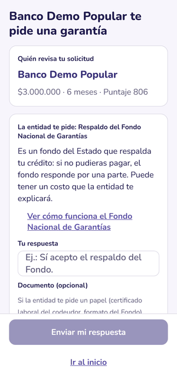
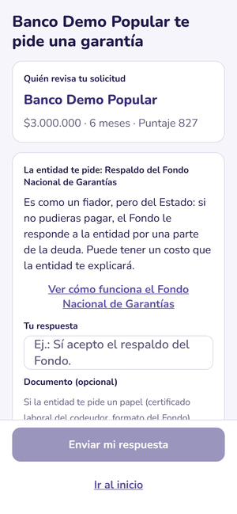

Diseñado con tenderos
La primera prueba fue con doña Gloria, en su tienda de Kennedy. Lo que no entendió, lo cambiamos.
tareas completadas en la app real
minutos para hacerlas todas, como alguien nuevo
problemas encontrados y corregidos
Cifras de una evaluación sin usuarios sobre la app real: modelo KLM, heurísticas de Nielsen y revisión de accesibilidad. Las sesiones con más tenderos siguen el mismo guion.


El respaldo del Fondo Nacional de Garantías, explicado como un fiador.